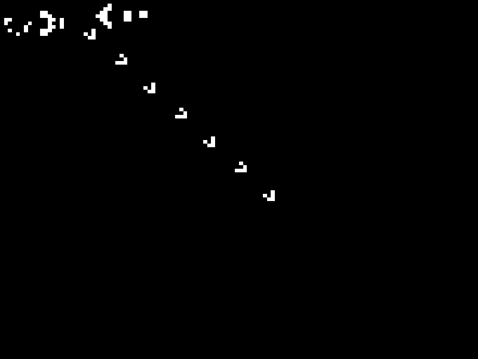

Example demonstrating the Game of Life in shaders. See http://en.wikipedia.org/wiki/Conway%27s_Game_of_Life This examples uses textures and FBO’s.
import time
import numpy as np
from vispy import gl
from vispy import oogl
from vispy import app
# Given initial world state
init_gun = [1,5, 2,5, 1,6, 2,6,
11,5, 11,6, 11,7, 12,4, 12,8, 13,3, 13,9, 14,3, 14,9, 15,6,
16,4, 16,8, 17,5, 17,6, 17,7, 18,6,
21,3, 21,4, 21,5, 22,3, 22,4, 22,5, 23,2, 23,6, 25,1, 25,2, 25,6, 25,7,
35,3, 35,4, 36,3, 36,4]
# Create texture to initialize the game
im1 = np.zeros((100,120,3), 'uint8')
X, Y = np.array(init_gun[::2]), (im1.shape[0]-1)-np.array(init_gun[1::2])
im1[Y,X] = 255
# Create vertex data
vertex_data = np.zeros(4, dtype=[ ('a_position', np.float32, 3),
('a_texcoord', np.float32, 2) ])
vertex_data['a_position'] = np.array([ [-1.0, -1.0, 0.0], [+1.0, -1.0, 0.0],
[-1.0, +1.0, 0.0], [+1.0, +1.0, 0.0,]
], np.float32)
vertex_data['a_texcoord'] = np.array([ [0.0, 0.0], [1.0, 0.0],
[0.0, 1.0], [1.0, 1.0] ], np.float32)
VERT_SHADER = """ // Life vertex shader
attribute vec3 a_position;
attribute vec2 a_texcoord;
varying vec2 v_texcoord;
void main (void) {
// Calculate position (note that we flip y here)
gl_Position = vec4(a_position.x, a_position.y, a_position.z, 1.0);
// Pass texture coords
v_texcoord = a_texcoord;
}
"""
FRAG_SHADER = """ // Life fragment shader
uniform sampler2D u_texture;
uniform vec2 u_texsize;
varying vec2 v_texcoord;
void main()
{
float dx = 1.0 / u_texsize.x;
float dy = 1.0 / u_texsize.y;
// Count alive neigghbours
int count = 0;
if (texture2D(u_texture, v_texcoord.xy+vec2(-dx, -dy)).r > 0.0)
count += 1;
if (texture2D(u_texture, v_texcoord.xy+vec2(-dx, 0.0)).r > 0.0)
count += 1;
if (texture2D(u_texture, v_texcoord.xy+vec2(-dx, +dy)).r > 0.0)
count += 1;
if (texture2D(u_texture, v_texcoord.xy+vec2(0.0, -dy)).r > 0.0)
count += 1;
if (texture2D(u_texture, v_texcoord.xy+vec2(0.0, +dy)).r > 0.0)
count += 1;
if (texture2D(u_texture, v_texcoord.xy+vec2(+dx, -dy)).r > 0.0)
count += 1;
if (texture2D(u_texture, v_texcoord.xy+vec2(+dx, 0.0)).r > 0.0)
count += 1;
if (texture2D(u_texture, v_texcoord.xy+vec2(+dx, +dy)).r > 0.0)
count += 1;
// Calculate if we stay alive or reproduce
float am_alive = texture2D(u_texture, v_texcoord.xy).r;
float survive = float(count==3) + am_alive*float(count==2);
survive = min(survive, 1.0);
// Set color
gl_FragColor = vec4(survive, survive, survive, 1.0);
}
"""
class Canvas(app.Canvas):
def __init__(self):
app.Canvas.__init__(self)
# Create program
self._program = oogl.Program( VERT_SHADER, FRAG_SHADER)
# Creat FBO
self._fbo = oogl.FrameBuffer()
self._fbo.attach_depth(oogl.RenderBuffer(im1.shape))
# Create vbo
self._vbo = oogl.VertexBuffer(vertex_data)
# Create textures
self._tex1 = oogl.Texture2D(im1)
self._tex2 = oogl.Texture2D(im1.shape)
for tex in (self._tex1, self._tex2):
tex.set_filter('NEAREST', 'NEAREST')
# Set uniforms and attributes
self._program.set_vars(self._vbo)
self._program['u_texsize'] = im1.shape[1], im1.shape[0]
def on_initialize(self, event):
gl.glClearColor(0,0,0,1)
def on_paint(self, event):
# Set framebuffer input output
self._program['u_texture'] = self._tex1
self._fbo.attach_color(self._tex2)
with self._fbo:
# Init
gl.glViewport(0, 0, im1.shape[1], im1.shape[0])
gl.glClear(gl.GL_COLOR_BUFFER_BIT | gl.GL_DEPTH_BUFFER_BIT)
# Draw
self._program.draw(gl.GL_TRIANGLE_STRIP)
# Draw to the normal color buffer (i.e. the screen)
self._program['u_texture'] = self._tex2
# Init
gl.glViewport(0, 0, self.size[0], self.size[1])
gl.glClear(gl.GL_COLOR_BUFFER_BIT | gl.GL_DEPTH_BUFFER_BIT)
# Draw
self._program.draw(gl.GL_TRIANGLE_STRIP)
# Prepare for next round
self._tex1, self._tex2 = self._tex2, self._tex1
# Force redraw
self.update()
if __name__ == '__main__':
c = Canvas()
c.show()
app.run()